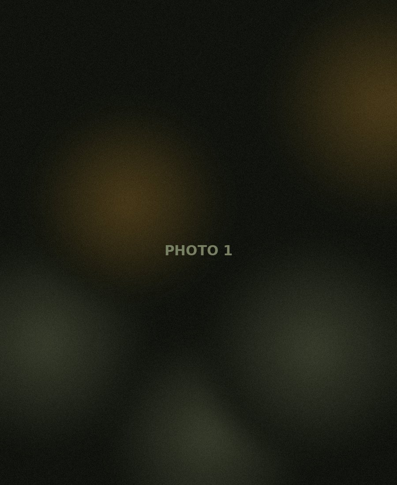
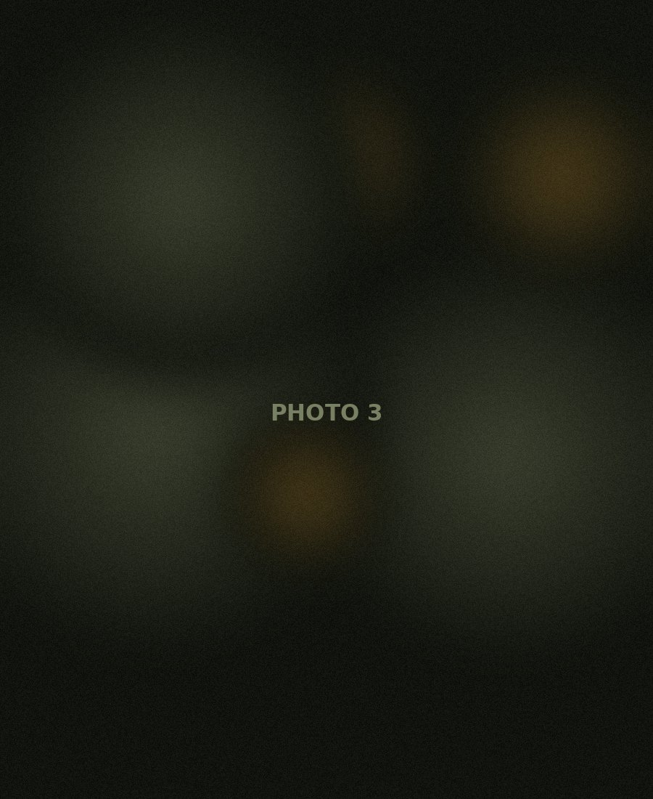
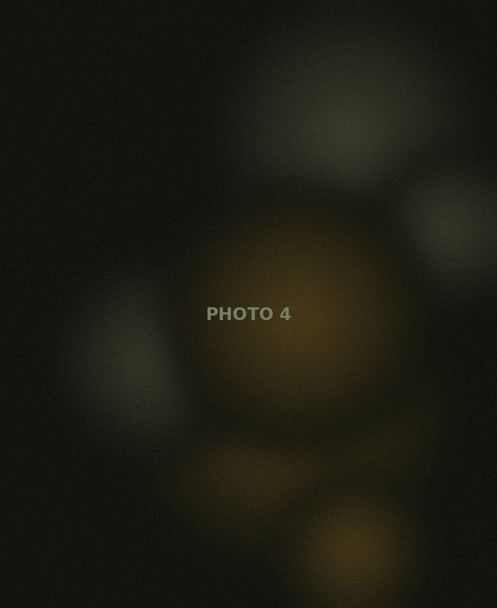

Bières
Neuf becs tournants en 25 et 50 cl, plus les bouteilles : Corona, Desperados et la sélection du moment.
Neuf becs pression qui tournent, des dizaines de bières en bouteille, des cocktails faits à la main et une terrasse sur la place Morny. On ouvre à 17h, on ferme quand la musique s'arrête.
Le mur des becs
Autant de becs tournants, c'est rare en Normandie. Les fûts changent au fil des semaines : ce qui est écrit ici est ce qui coule ce soir.
Liste indicative, mise à jour à chaque rotation de fût. Pour savoir ce qui coule ce soir précisément, un coup de fil suffit : 06 42 41 81 67.
Ce qu'on sert
Une carte construite pour durer toute la soirée : on commence par une pression, on enchaîne sur un cocktail, on partage une planche, et personne n'a envie de partir.
Neuf becs tournants en 25 et 50 cl, plus les bouteilles : Corona, Desperados et la sélection du moment.
Les classiques faits correctement, quelques créations du bar et une sangria qui a fait sa réputation sur la terrasse.
Une sélection courte et sérieuse, au verre comme à la bouteille, pour ceux que le houblon n'intéresse pas.
Planches à partager, croques, accras et petites assiettes. De quoi tenir jusqu'à la fermeture.




Groupes & privatisation
Anniversaire, pot de départ, afterwork d'équipe ou séminaire qui se termine bien : on met un espace de côté, on adapte la carte, et on s'occupe du reste.
Nous trouver
Au cœur du centre historique, à cinquante mètres de la place Morny. Depuis la gare de Deauville-Trouville, comptez cinq minutes à pied.